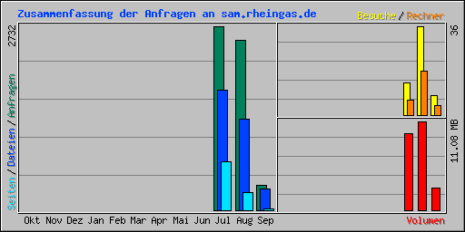

| Zusammenfassung nach Monaten | ||||||||||||
|---|---|---|---|---|---|---|---|---|---|---|---|---|
| Monat | Tagesdurchschnitt | Monats-Summe | ||||||||||
| Anfragen | Dateien | Seiten | Besuche | Rechner | Volumen | Vol. In | Vol. Out | Besuche | Seiten | Dateien | Anfragen | |
| Sep 2016 | 121 | 103 | 8 | 2 | 4 | 2.75 MB | 0 bytes | 0 bytes | 8 | 26 | 311 | 364 |
| Aug 2016 | 81 | 43 | 8 | 1 | 18 | 11.08 MB | 0 bytes | 0 bytes | 36 | 259 | 1357 | 2525 |
| Jul 2016 | 546 | 355 | 144 | 2 | 6 | 9.54 MB | 0 bytes | 0 bytes | 13 | 721 | 1777 | 2732 |
| Summen | 23.36 MB | 0 bytes | 0 bytes | 57 | 1006 | 3445 | 5621 | |||||
| Generated by Webalizer Xtended (RB30) by Patrick Frei based on Webalizer Version 2.23-08 |